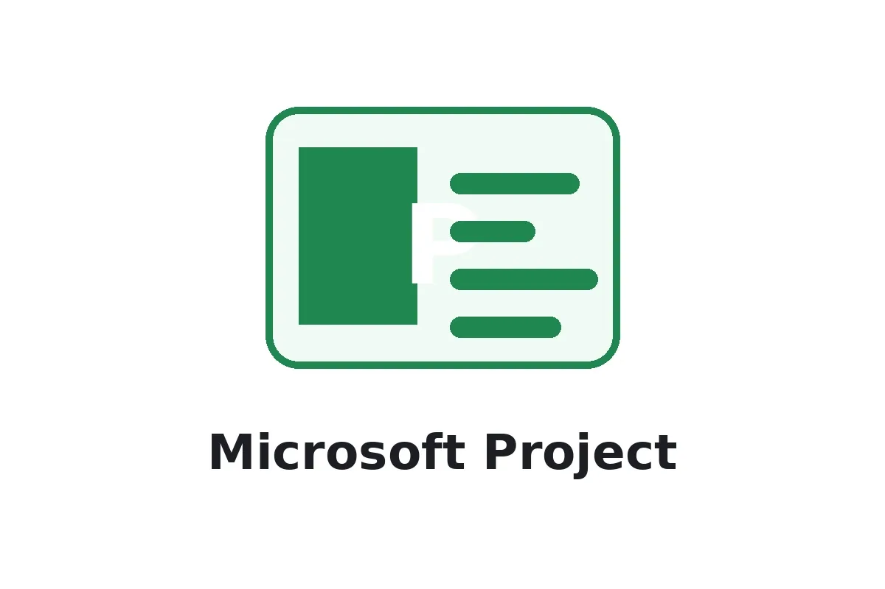
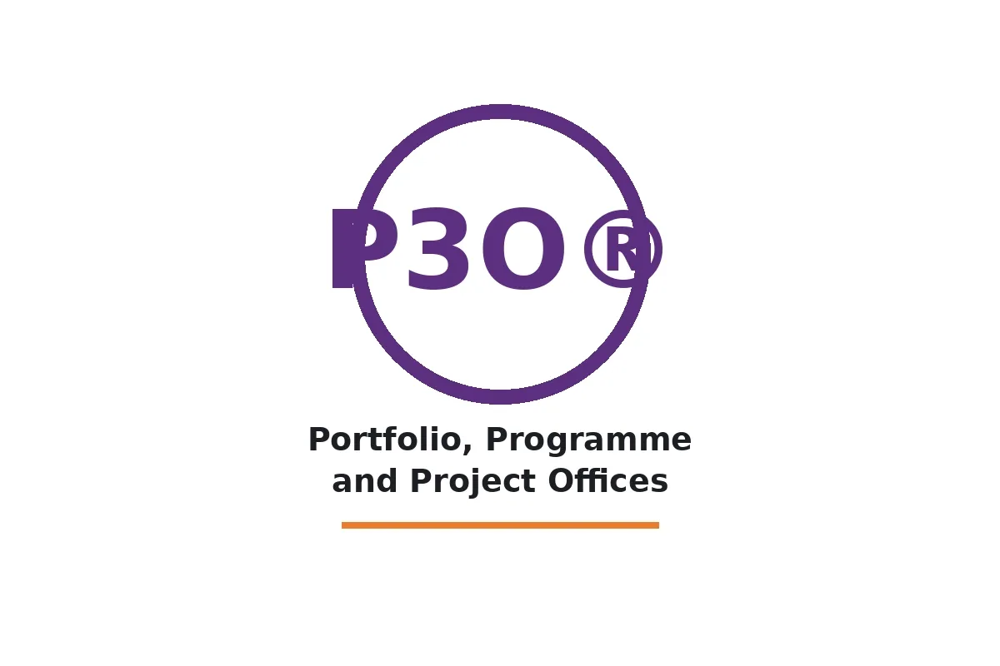

حضوري في الرياض
- المدة: 4 أسابيع
- لغة التدريب: عربى
- في مقر معهد مسارتك بالرياض
- مدعومة من صندوق تنمية الموارد البشرية (هدف)
شامل الضريبة1,495
نؤهلك لاختبار PMP في 35 ساعة خلال 4 أسابيع، أونلاين مباشر أو حضوري بالرياض، مع تغطية PMBOK وAgile وHybrid.
دورة PMP لإدارة المشاريع برنامج تدريبي من معهد مسارتك للتدريب في الرياض. نؤهلك لاختبار PMP في 35 ساعة خلال 4 أسابيع، أونلاين مباشر أو حضوري بالرياض، مع تغطية PMBOK وAgile وHybrid. تُقدَّم الدورة حضوريًا في الرياض أو أونلاين مباشر، ومدتها 4 أسابيع، وأقرب موعد لها الجمعة 04/12/2026، ورسومها تبدأ من 1,495 ريال شامل الضريبة.
آخر تحديث للمعلومات:
تحقق من أهليتك واطّلع على الدورات المدعومة وخطوات التقديم.
الأهداف، ولمن تناسب، والاختبار والشهادة، في مكان واحد.
دورة إدارة المشاريع الاحترافية
دورة إدارة المشاريع PMP | تأهيل لشهادة PMP من PMI أونلاين وحضوري بالرياض
برنامج تدريبي احترافي لتأهيلك لاختبار PMP، مع تغطية PMBOK، Agile، Hybrid، إدارة النطاق والوقت والتكلفة والجودة والمخاطر وأصحاب المصلحة، وتطبيقات عملية تناسب سوق العمل السعودي والخليجي.
PMP Project Management Professional
35 ساعة تدريب مطلوب للتقديم
180 سؤالًا عدد أسئلة الاختبار
240 دقيقة مدة اختبار PMP
2 × 10 دقائق فترتا راحة مجدولتان
المسار: تحضير لاختبار PMP التدريب: 35 ساعة المدة: 4 أسابيع الحضور: أونلاين مباشر أو حضوري بالرياض حسب الدفعة
35 ساعة تدريب في إدارة المشاريع
محدث 2026 وفق تغييرات اختبار PMP المعلنة
أونلاين + الرياض حسب الدفعات المتاحة
محاكاة ومراجعة ضمن محتوى التحضير للاختبار
سعر دورة PMP المعروض في الحجز 1,495 ريال
اقرأ تقييمات المتدربين
قارن الرسوم وما يشمله السعر اسأل عن أقرب دفعة
دورة PMP من معهد مسارتك برنامج تدريبي تحضيري مدته 35 ساعة خلال 4 أسابيع للتحضير لاختبار PMP، ويُقدَّم أونلاين مباشر أو حضوريًا في الرياض حسب الدفعات المتاحة، بشرح عربي ومصطلحات إنجليزية. أما شهادة PMP الدولية فتصدر من PMI فقط بعد قبول الطلب واجتياز الاختبار.
تُعد شهادة PMP – Project Management Professional واحدة من أهم الشهادات المهنية العالمية في إدارة المشاريع، وهي اعتماد دولي يمنحه معهد إدارة المشاريع PMI في الولايات المتحدة الأمريكية، وتثبت قدرة حاملها على إدارة المشاريع بكفاءة عالية وفق أحدث المعايير والممارسات العالمية.
في سوق العمل السعودي والخليجي، أصبحت إدارة المشاريع مهارة محورية في قطاعات البناء والهندسة وتقنية المعلومات والجهات الحكومية والشركات الكبرى، لذلك تمثل دورة PMP من معهد مسارتك بالرياض خطوة قوية لكل من يريد تطوير مساره المهني والانتقال إلى أدوار قيادية وإدارية.
تركز دورة إدارة المشاريع الاحترافية على بناء فهم شامل لإدارة المشاريع الحديثة، مع تدريب عملي على مفاهيم PMBOK ومنهجيات Agile وHybrid وWaterfall، إلى جانب التحضير المنظم لاختبار PMP الدولي.
وإذا كنت تبحث عن دورة إدارة المشاريع أو كورس PMP (وتُكتب أحيانًا «دورة بي ام بي») في الرياض أو أونلاين، فهذا البرنامج مصمم للتهيئة لشهادة إدارة المشاريع الاحترافية PMP الصادرة عن معهد إدارة المشاريع الأمريكي PMI، مع شرح عربي ومصطلحات إنجليزية كما تظهر في الاختبار.
تحديث 9 يوليو 2026: أطلقت PMI اختبار PMP المحدث بواقع 180 سؤالًا خلال 240 دقيقة، مع فترتي راحة مجدولتين مدة كل منهما 10 دقائق. أوزان المجالات الحالية: People بنسبة 33%، وProcess بنسبة 41%، وBusiness Environment بنسبة 26%، مع تركيز أكبر على القيمة والذكاء الاصطناعي والاستدامة وإشراك أصحاب المصلحة.
معنى PMP: هي اختصار Project Management Professional أي «محترف إدارة المشاريع»، وهي الشهادة المهنية التي يمنحها PMI لمن يستوفي شروط الخبرة والتدريب ويجتاز الاختبار.
شهادة PMP هي اعتماد دولي يثبت قدرة المتخصص على قيادة وإدارة المشاريع بكفاءة، من خلال فهم دورة حياة المشروع، إدارة الفرق، التحكم في النطاق والجدول الزمني والتكلفة، وإدارة المخاطر والتواصل مع أصحاب المصلحة.
تركز الشهادة على تأهيل المتدرب لفهم وإدارة المشاريع من منظور احترافي يشمل:
وتُعد شهادة PMP معيارًا قويًا للتميز المهني في المشاريع داخل القطاعات الحكومية والهندسية والتقنية والإنشائية والخدمية.
ما هي دورة PMP؟ وما الفرق بينها وبين شهادة PMP؟ دورة PMP هي برنامج تدريبي (35 ساعة) يجهزك للاختبار ويساعدك على استيفاء متطلب التدريب وفق قواعد PMI السارية، وتحصل بعدها على شهادة إتمام تدريب. أما شهادة PMP نفسها فتصدر من PMI فقط بعد قبول طلبك واجتياز الاختبار. الدورة هي الطريق، والشهادة هي النتيجة.
شهادة PMP مطلوبة في السعودية والشرق الأوسط لكل من يعمل في المشاريع الكبيرة مثل البناء، والهندسة، وتقنية المعلومات، والجهات الحكومية، لأنها تعزز مصداقية مدير المشروع أمام الشركات وأصحاب القرار.
زيادة الرواتب
تعزز قيمتك السوقية وتدعم فرص الحصول على عروض وظيفية أفضل.
فرص الترقية
تفتح أبواب المناصب القيادية والإدارية داخل الشركات.
اعتراف عالمي
اعتماد مهني معروف دوليًا من PMI في إدارة المشاريع.
تطوير المهارات
تساعدك على فهم التخطيط والتنفيذ والمخاطر والجودة والفرق.
ثقة أصحاب العمل
تمنحك قوة تفاوضية أعلى في المقابلات والعقود.
انتقال قيادي
تساعدك على الانتقال من التنفيذ إلى قيادة المشاريع والفرق.
ماذا عن رواتب الحاصلين على شهادة PMP؟ وفق استبيان الرواتب الذي نشره PMI عام 2025 وشمل 21 دولة، يحصل حاملو شهادة PMP على متوسط راتب أعلى بنحو 17% من غير الحاصلين عليها. ويختلف الرقم الفعلي في السعودية حسب القطاع وسنوات الخبرة والمسمى الوظيفي.
الخلاصة: شهادة PMP ليست مجرد شهادة مهنية، بل استثمار حقيقي في مستقبلك الوظيفي ومكانتك داخل المؤسسة.
في معهد مسارتك لا نقدم دورة نظرية فقط، بل نقدم تجربة تدريبية متكاملة تساعدك على الفهم، والتطبيق، والاستعداد الحقيقي للاختبار.
مدربون متخصصون
مدربون بخبرة في إدارة المشاريع والتحضير المنظم لاختبار PMP.
محتوى محدث
محتوى تدريبي يغطي PMBOK + Agile + Hybrid.
35 ساعة تدريبية
يقدم البرنامج 35 ساعة تدريبية في إدارة المشاريع. قبل التقديم، يجب التأكد من أن جهة التدريب وطريقة تقديمه تستوفيان قواعد PMI السارية وقت تقديم الطلب.
اختبارات تجريبية
تدريبات ومحاكاة تساعدك على فهم طبيعة أسئلة PMP.
مرونة التعلم
حضور أونلاين مباشر أو حضوري بالرياض حسب البرنامج المتاح.
دعم مباشر
دعم عبر الواتساب أثناء الدورة وبعدها للاستفسارات والمتابعة.
بدل الاعتماد على عبارة «أفضل معهد» وحدها، قارن بين عناصر يمكن التحقق منها قبل الدفع:
وضوح 35 ساعة التدريب
اعرف عدد الساعات الفعلية وتوزيعها على اللقاءات وطريقة إثبات إكمالها.
توافق المحتوى مع اختبار 2026
يجب أن يغطي التدريب مجالات People وProcess وBusiness Environment والأساليب التنبؤية والرشيقة والهجينة.
السعر وما يشمله
قارن رسوم التدريب، العروض، المواد والمحاكاة، ولا تفترض شمول رسوم اختبار PMI إلا إذا ذُكر ذلك صراحة.
الحضور والمواعيد
تأكد من توقيت الرياض، أيام التدريب، والفرق بين الحضور المباشر أونلاين والحضور داخل القاعة.
التقييمات الفعلية
راجع تقييمات المتدربين المنشورة للدورة نفسها بدل الاكتفاء بتقييم عام للمنشأة.
أهلية مزود التدريب
خصوصًا للتدريب المباشر الذي يكتمل من 1 ديسمبر 2026 فصاعدًا، راجع قواعد PMI السارية وقت التقديم.
اختر الخطوة التالية وفق خبرتك الفعلية: تأسيس قبل PMP، أو استكمال مهارات إدارة المشاريع والتقارير بعد بناء الأساس.
دورة CAPM مناسبة لمن يريد تأسيسًا رسميًا في إدارة المشاريع قبل استيفاء خبرة PMP. عرض دورة CAPM جميع دورات مسارتك راجع مسارات إدارة المشاريع والحوكمة والتقنية المتاحة في معهد مسارتك. تصفح الدورات
حدد احتياجك قبل التسجيل تأكد هل تحتاج تأسيسًا، أو 35 ساعة تدريب، أو محاكاة اختبار، أو تطويرًا عمليًا في أدوات إدارة المشاريع.
هل تريد معرفة أقرب موعد لدورة PMP؟ تواصل مع معهد مسارتك لمعرفة الدفعات المتاحة، طريقة الحضور، العروض الحالية، وخطة الاستعداد لاختبار PMP.
برنامج تدريبي احترافي · معهد مسارتك بالرياض
1,495 ريال سعر دورة PMP المعروض في الحجز
مدة الدورة الحالية: 4 أسابيع. يُعتمد السعر النهائي والموعد من نظام الحجز بعد اختيار طريقة الحضور والدفعة.
ما الذي يشمله السعر؟ يشمل وصف البرنامج التدريب على إدارة المشاريع، والمراجعات والاختبارات التجريبية والمحاكاة. السعر الأساسي الظاهر في الحجز 1,495 ريال، وقد يختلف السعر النهائي بحسب العروض والدفعات، ويُعتمد السعر النهائي من نظام الحجز. لا تعتبر رسوم اختبار PMI أو عضوية PMI مشمولة إلا إذا ظهر ذلك صراحة في ملخص الحجز أو العرض المكتوب.
الاسترجاع والتأجيل: يمكن طلب استرجاع كامل المبلغ خلال 24 ساعة من التسجيل بشرط عدم بدء الدورة، ويجب تقديم الطلب كتابيًا. ولا يُسمح بتأجيل المحاضرات وفق السياسة المنشورة، وقد تتوافر استثناءات لبعض الدورات أو الحالات الفنية. التفاصيل في سياسة الاسترجاع والتأجيل.
دعم هدف: دعم الشهادات المهنية من هدف قائم على التعويض بعد الحصول على الشهادة واستيفاء الشروط، لذلك لا تُعد الدورة مجانية أو مدعومة تلقائيًا، ولا يمكن ضمان قبول طلب التعويض. التفاصيل في دليل PMP وهدف وعلى الموقع الرسمي لهدف.
إذا كنت تسعى للترقية أو قيادة مشاريع أكبر، فدورة PMP في معهد مسارتك تمنحك أساسًا قويًا ومنظمًا للاستعداد للاختبار وتطبيق إدارة المشاريع في الواقع العملي.
MasarTech offers a 35-hour PMP exam preparation course in Riyadh (in-class) and live online across Saudi Arabia. The course covers the People, Process and Business Environment domains of the 2026 PMP exam, plus predictive, agile and hybrid approaches, with practice exams and review.
دورة PMP من معهد مسارتك تساعدك على فهم إدارة المشاريع الحديثة، وتمنحك إطارًا عمليًا للتحضير للاختبار وتطبيق المهارات داخل المشاريع الحقيقية.
الأسئلة المتكررة
يمكنك شراء قسيمة الاختبار بكل سهولة من خلال موقعنا، ولكن يتم تسجيل بالدورة اول بعدها الاختبار
الإنجليزية
العربية
نعم، سيعطيك المعهد شارة رقمية لمساعدتك في عرض تصوير مرئي لإنجازاتك.
في غضون ستة إلى ثمانية أسابيع، ستتلقى حزمة شهادة تتضمن: خطاب تهنئة، معلومات حول كيفية الحفاظ على شهادتك وتجديدها، شهادة معتمدة
نعم، ستتلقى حزمة شهادة
نعم، يمكنك إعادة جدولة أو إلغاء اختبارك المراقب عبر الإنترنت أو الاختبار المعتمد على المركز في أي وقت، حتى 48 ساعة قبل موعد الاختبار المحدد.
يتم منحك فترة أهلية مدتها عام واحد لاجتياز الاختبار. خلال فترة الأهلية، يمكنك إجراء الاختبار حتى ثلاث مرات لأن المرشحين لا يتمكنون دائمًا من اجتياز الاختبار في محاولتهم الأولى.
يتم تحديد درجة النجاح في جميع اختبارات معهد إدارة المشاريع حسب درجة صعوبة الأسئلة، درجة النجاح هي 61٪.
أ. يتلقى المرشحون الذين يخضعون لاختبار عبر الحاسوب تقرير الاختبار في مركز الاختبار في اليوم الذي يخضعون فيه للاختبار. يمكنك الوصول إلى تقرير الاختبار الخاص بك على نظام الشهادات عبر الإنترنت في موعد لا يتجاوز 10 أيام عمل من تاريخ الاختبار. ستتلقى رسالة بريد إلكتروني لإعلامك عندما يكون تقرير الاختبار الخاص بك متاحًا عبر الإنترنت. ب. لن يتلقى المرشحون الذين يجرون الاختبار الورقي تقرير الاختبار في يوم الاختبار. ستتمكن من الوصول إلى تقرير الاختبار الخاص بك على نظام الشهادات عبر الإنترنت بعد ستة إلى ثمانية أسابيع تقريبًا من تاريخ الاختبار. ستتلقى رسالة بريد إلكتروني لإعلامك عندما يكون تقرير الاختبار الخاص بك متاحًا عبر الإنترنت
العربية والعبرية والبرازيلية والبرتغالية والإيطالية والصينية (المبسطة) واليابانية والصينية (التقليدية) والكورية والفرنسية والروسية والألمانية والإسبانية والبولندية والتركية
4 ساعات.
كلا، رسوم الدورة تشمل خدمات التدريب فقط.
نعم متاحة
نعم، إنها معتمدة من قبل معهد معهد إدارة المشاريع PMI.
يجب على كل من يحصل على شهادة PMI (باستثناء شهادة CAPM®) أن يحافظ على صلاحية شهادته من خلال المشاركة في برنامج CCR وتجديدها كل 3 سنوات.
اختبار أونلاين مراقب عبر "بيرسون فيو"
الشهادة الثانوية (دبلوم المدرسة الثانوية، درجة الزمالة أو ما يعادلها عالميًا) 7500 ساعة قيادة وتوجيه المشاريع 35 ساعة من تعليم إدارة المشاريع أو شهادة CAPM أو درجة أربع سنوات 4500 ساعة قيادة وتوجيه المشاريع 35 ساعة من تعليم إدارة المشاريع أو شهادة CAPM
نعم
قبل التسجيل، هذه أبرز العناصر المذكورة ضمن البرنامج الحالي. ويظل السعر النهائي والموعد وطريقة الحضور مرتبطة بالدفعة المختارة في نموذج الحجز.
35 ساعة تدريبية
برنامج تدريبي في إدارة المشاريع يغطي المتطلبات والمحاور الأساسية للتحضير لاختبار PMP.
Predictive + Agile + Hybrid
تغطية الأساليب التنبؤية والرشيقة والهجينة وربطها بسيناريوهات إدارة المشاريع.
اختبارات ومحاكاة
مراجعات واختبارات تجريبية تساعد على فهم نمط الأسئلة وتحديد فجوات الاستعداد.
فحص أهلية مبدئي
أداة إرشادية تساعدك على فهم مسارك المبدئي قبل التقديم الرسمي لدى PMI.
مرونة الحضور
أونلاين مباشر أو حضوري في الرياض وفق الدفعات المتاحة في الحجز.
دعم للاستفسارات
قنوات تواصل مباشرة للاستفسار عن الأهلية والدفعات وخطة الاستعداد للاختبار.
تضع PMI أربعة مسارات أهلية حسب المؤهل والخبرة في قيادة المشاريع، وتُحسب الخبرة المهنية حاليًا خلال آخر 10 سنوات.
| المسار | المؤهل | خبرة المشاريع | التدريب المطلوب |
|---|---|---|---|
| الثانوي أو ما يعادله | شهادة ثانوية أو GED أو ما يعادلها | 5 سنوات خبرة في قيادة المشاريع خلال آخر 10 سنوات | 35 ساعة تدريب في إدارة المشاريع أو CAPM نشطة |
| الدبلوم المهني / Associate | Associate Degree أو دبلوم مهني معترف به | 4 سنوات خبرة في قيادة المشاريع خلال آخر 10 سنوات | 35 ساعة تدريب في إدارة المشاريع أو CAPM نشطة |
| البكالوريوس أو أعلى | بكالوريوس أو مؤهل أعلى | 3 سنوات خبرة في قيادة المشاريع خلال آخر 10 سنوات | 35 ساعة تدريب في إدارة المشاريع أو CAPM نشطة |
| برنامج معتمد من GAC | بكالوريوس أو دراسات عليا من برنامج GAC | سنتان خبرة في قيادة المشاريع خلال آخر 10 سنوات | 35 ساعة تدريب، وقد تُحتسب ساعات من البرنامج |
تنبيه بخصوص ساعات التدريب: حتى دخول التحديث المعلن من PMI حيز التنفيذ، تُقبل 35 ساعة من تدريب مؤهل وفق القواعد السارية. وقد أعلنت PMI أن التدريب المباشر Live سيخضع لمتطلبات مزود أكثر تقييدًا ابتداءً من 1 ديسمبر 2026؛ لذلك يجب التحقق من أهلية الجهة وقت تقديم الطلب، وعدم الاكتفاء بعبارة «35 ساعة» وحدها.
ملاحظة مهمة: يفضّل إلمام أساسي باللغة الإنجليزية لمصطلحات الدليل الإرشادي والاختبار، حتى لو كانت الدراسة باللغة العربية.
| الفئة | مدى الاستفادة |
|---|---|
| مديرو المشاريع | لتطوير مهارات القيادة والتخطيط والتحكم في المشاريع. |
| منسقو المشاريع | للانتقال من دور تنسيقي إلى دور إداري أكثر احترافية. |
| المهندسون | لمن يعملون في مشاريع البناء، التشغيل، الطاقة، أو التقنية. |
| محللو الأعمال | لفهم إدارة نطاق المشروع والاتصال مع أصحاب المصلحة. |
| قادة الفرق | لتحسين إدارة فرق العمل والموارد والمخاطر. |
| الطامحون للترقية | لمن يريدون الانتقال إلى أدوار قيادية وإدارية. |
Project Manager
إدارة المشاريع من التخطيط حتى التسليم.
Program Coordinator
دعم البرامج والمشاريع متعددة الفرق.
PMO Specialist
متابعة الحوكمة، التقارير، الأداء، والمعايير داخل مكتب المشاريع.
Project Consultant
تقديم استشارات لتحسين إدارة المشاريع داخل المؤسسات.
Agile Project Lead
قيادة مشاريع تعتمد على Agile أو Hybrid.
Operations / Delivery Manager
إدارة التسليم، الموارد، والمخرجات التشغيلية.
طريقة الحصول على شهادة PMP واحدة في السعودية وكل الدول، لأن الشهادة تصدر من PMI مباشرة. هذه هي الخطوات بالترتيب:
راجع المؤهل وخبرة قيادة المشاريع خلال آخر 10 سنوات، ويمكنك استخدام فحص الأهلية السريع أعلى الصفحة.
من خلال دورة PMP تغطي مجالات الاختبار الحالية، أو بوجود شهادة CAPM نشطة.
أنشئ حسابًا على pmi.org واملأ طلب PMP بتفاصيل خبرتك وساعات التدريب. قد يُختار طلبك للتدقيق Audit فتحتاج إلى إثباتات.
بعد قبول الطلب تدفع رسوم اختبار PMP، والرسوم أقل لأعضاء PMI. يبدأ بعدها عام الأهلية الذي يمكنك خلاله المحاولة حتى 3 مرات.
من لوحة PMI تنتقل إلى نظام Pearson VUE لاختيار مركز اختبار في الرياض أو جدة أو الخبر، أو الاختبار أونلاين من المنزل.
بعد النجاح تحصل على شهادة PMP، وتجددها كل 3 سنوات بجمع 60 وحدة PDU.
يُقدَّم اختبار PMP في السعودية عبر شبكة Pearson VUE المعتمدة من PMI، بطريقتين: في مركز اختبار، أو أونلاين بمراقبة مباشرة.
| الخيار | التفاصيل |
|---|---|
| مركز اختبار PMP في الرياض | مراكز Pearson VUE المعتمدة داخل الرياض، ويظهر العنوان والمواعيد المتاحة عند الحجز. |
| مراكز اختبار PMP في السعودية | تتوفر مراكز في الرياض وجدة والخبر (تخدم الدمام والمنطقة الشرقية). |
| اختبار PMP أونلاين | عبر Pearson OnVUE من المنزل أو المكتب، بكاميرا ومراقب مباشر وغرفة خالية. |
| حجز اختبار PMP | من حسابك على pmi.org بعد قبول الطلب ودفع الرسوم، ثم اختيار المدينة والتاريخ والوقت في Pearson VUE. |
| مواعيد اختبار PMP | المواعيد مفتوحة على مدار العام حسب توفر المقاعد، ويفضّل الحجز قبل الموعد المستهدف بأسابيع. |
| لغة الاختبار | متاح بالإنجليزية مع إمكانية اختيار المساعدة اللغوية العربية. |
رسوم الاختبار تُدفع لـ PMI بالدولار، وهي منفصلة عن رسوم الدورة التدريبية:
| البند | عضو PMI | غير عضو |
|---|---|---|
| رسوم اختبار PMP | 425 دولار (حوالي 1,594 ريال) | 675 دولار (حوالي 2,531 ريال) |
| رسوم إعادة الاختبار | 275 دولار (حوالي 1,031 ريال) | 375 دولار (حوالي 1,406 ريال) |
تنبيه على الأسعار: الأرقام وفق رسوم PMI المنشورة في 2026، والتحويل للريال تقريبي بسعر 3.75. قد تتغير الرسوم، لذلك اعتمد السعر الظاهر في حسابك على pmi.org قبل الدفع. وكثير من المتقدمين يشترون عضوية PMI أولًا لأن فرق رسوم الاختبار يغطي جزءًا كبيرًا من قيمتها.
كم سعر شهادة PMP إجمالًا؟ التكلفة الكاملة = رسوم دورة التحضير (راجع سعر الدورة في الحجز) + رسوم اختبار PMI، وأحيانًا + عضوية PMI الاختيارية.
كل ما تحتاجه لشهادتك القادمة في مكان واحد.
الوحدات التي تغطيها دورة PMP لإدارة المشاريع بالترتيب.
تركز الدورة على بناء فهم شامل لمجالات إدارة المشاريع الحديثة، مع ربط الجانب النظري بالتطبيق العملي والاستعداد للاختبار.
| الوحدة | العنوان | أبرز المحاور / المهارات |
|---|---|---|
| 1 | أساسيات إدارة المشاريع | المخرجات، القيود، الحوكمة، أدوار الفريق، بيئة المشروع |
| 2 | نظام توصيل القيمة | المواءمة الاستراتيجية، قياس القيمة، مخرجات المشروع |
| 3 | مجالات الأداء | أصحاب المصلحة، الفريق، التخطيط، العمل، القياس، التسليم |
| 4 | نطاق ووقت وتكلفة | WBS، الجدولة، الميزانية، EVM، التحكم في التغييرات |
| 5 | الجودة والموارد | مواصفات الجودة، RACI، إدارة الموارد، تحسين الأداء |
| 6 | الاتصال وأصحاب المصلحة | قنوات الاتصال، مصفوفات التأثير، إدارة التوقعات |
| 7 | المخاطر والمشتريات | السجلات، التحليل النوعي والكمي، خطط الاستجابة، التعاقد |
| 8 | Agile & Hybrid | Scrum، Kanban، التخطيط التكراري، واختيار النهج الهجين المناسب |
| 9 | الأخلاقيات والاحترافية | مدونة PMI، اتخاذ القرار، المسؤولية المهنية |
| 10 | مراجعات واختبارات تجريبية | محاكاة اختبار، تحليل فجوات، خطة مراجعة قبل الاختبار |
هي شهادة مهنية عالمية من PMI تقيس قدرة المتخصص على قيادة المشاريع وإدارة الأشخاص والعمليات وأولويات الأعمال عبر الأساليب التنبؤية والرشيقة والهجينة.
PMP اختصار Project Management Professional، أي «محترف إدارة المشاريع»، وهي شهادة مهنية دولية يمنحها معهد إدارة المشاريع الأمريكي PMI.
دورة PMP برنامج تدريبي مدته 35 ساعة يجهزك للاختبار ويساعدك على استيفاء متطلب التدريب وفق قواعد PMI السارية، أما شهادة PMP فتصدر من PMI فقط بعد قبول طلبك واجتياز الاختبار.
تأكد من شروط المؤهل والخبرة، ثم أكمل 35 ساعة تدريب، وقدّم طلبك على pmi.org، وادفع رسوم الاختبار بعد القبول، ثم احجز الاختبار عبر Pearson VUE في الرياض أو جدة أو الخبر أو أونلاين، واجتزه.
رسوم اختبار PMP المنشورة في 2026 هي 425 دولارًا لأعضاء PMI (حوالي 1,594 ريالًا) و675 دولارًا لغير الأعضاء (حوالي 2,531 ريالًا). وهي منفصلة عن سعر الدورة، ويُعتمد السعر الظاهر على pmi.org وقت الدفع.
يُقدَّم الاختبار عبر مراكز Pearson VUE المعتمدة في الرياض وجدة والخبر، ويظهر عنوان المركز والمواعيد المتاحة عند الحجز من حسابك على PMI.
نعم، عبر Pearson OnVUE بمراقبة مباشرة، بشرط وجود كاميرا واتصال مستقر وغرفة خالية طوال مدة الاختبار.
لا، شهادة PMP تتطلب خبرة في قيادة المشاريع من سنتين إلى 5 سنوات حسب المؤهل. إذا لم تكن لديك الخبرة بعد، فشهادة CAPM هي البداية المناسبة.
شهادة PMP لها رسوم اختبار تُدفع لـ PMI ولا تُمنح مجانًا. قد تجد محتوى تعليميًا مجانيًا، لكن الدورة التي تستوفي 35 ساعة تدريب بإثبات إكمال تكون عادة مدفوعة.
لا. شهادة PMP تصدر من PMI فقط بعد اجتياز الاختبار، ويمكن لأي جهة التحقق منها في سجل PMI الرسمي. أي عرض لبيع الشهادة احتيال.
الاختبار الحالي يتكون من 180 سؤالًا، ومدته 240 دقيقة.
زاد التركيز على القيمة والأثر التجاري والذكاء الاصطناعي والاستدامة وإشراك أصحاب المصلحة، وأصبحت الأوزان People بنسبة 33% وProcess بنسبة 41% وBusiness Environment بنسبة 26%.
معهد مسارتك جهة تدريب مرخصة محليًا وفق بياناتها النظامية، بينما شهادة PMP الدولية تصدر من PMI بعد استيفاء الأهلية واجتياز الاختبار. لا نساوي بين ترخيص جهة التدريب وبين اعتماد PMI كـATP، ويجب التحقق من أهلية ساعات التدريب وفق قواعد PMI السارية وقت إكمالها.
لا. شهادة إتمام التدريب تثبت حضور البرنامج، أما شهادة PMP الدولية فتتطلب استيفاء شروط PMI والتقديم للاختبار واجتيازه.
نعم، تحتاج إلى 35 ساعة من التدريب المهني في إدارة المشاريع أو شهادة CAPM نشطة، مع استيفاء متطلبات المؤهل والخبرة.
تتراوح الخبرة المطلوبة بين سنتين وخمس سنوات حسب المؤهل، وتُحسب خبرة قيادة المشاريع خلال آخر 10 سنوات.
الاختبار متاح بالإنجليزية مع إمكانية اختيار المساعدة اللغوية العربية.
مدة الدورة الظاهرة حاليًا في صفحة الحجز هي 4 أسابيع، وتشمل 35 ساعة تدريبية وفق وصف البرنامج.
سعر الدورة المعروض في نموذج الحجز: 1,495 ريال. قد يختلف السعر النهائي بحسب العروض والدفعات، ويُعتمد السعر النهائي الظاهر في نظام الحجز. ولا تفترض شمول رسوم اختبار PMI أو عضوية PMI في السعر.
لا تفترض شمول رسوم اختبار PMI إلا إذا نص عرض الحجز على ذلك صراحة؛ رسوم التدريب ورسوم الاختبار عنصران منفصلان عادة.
يمكن طلب استرجاع كامل المبلغ خلال 24 ساعة من التسجيل بشرط عدم بدء الدورة، ويجب تقديم الطلب كتابيًا. ولا يُسمح بتأجيل المحاضرات وفق السياسة المنشورة، وقد تتوافر استثناءات لبعض الدورات أو الحالات الفنية. التفاصيل في سياسة الاسترجاع والتأجيل.
دعم الشهادات المهنية من هدف قائم على التعويض بعد الحصول على الشهادة واستيفاء الشروط، لذلك لا تُعد الدورة مجانية أو مدعومة تلقائيًا، ولا يمكن ضمان قبول طلب التعويض. التفاصيل في دليل PMP وهدف وعلى الموقع الرسمي لهدف.
لا، ليست للمهندسين فقط. الدورة تناسب مديري المشاريع ومنسقي المشاريع ومحللي الأعمال وقادة الفرق والمهنيين في قطاعات متعددة، بشرط ملاءمة متطلبات الخبرة لهدف الشهادة.
نعم. يتضمن الاختبار الحالي فترتي راحة مجدولتين، مدة كل منهما 10 دقائق، إضافة إلى 240 دقيقة مخصصة للإجابة.
تعمل الشهادة ضمن دورة تجديد مدتها 3 سنوات، ويلزم جمع 60 وحدة تطوير مهني PDU خلال كل دورة تجديد، ثم استكمال إجراءات التجديد لدى PMI.
يجب أن تكون الساعات مستوفية لقواعد PMI السارية وقت تقديم الطلب. أعلنت PMI تغييرًا مرتقبًا لأهلية التدريب المباشر في 1 ديسمبر 2026، لذلك يجب التحقق من حالة مزود التدريب قبل الاعتماد على الساعات.
دورات قريبة من دورة PMP لإدارة المشاريع قد تناسب خطوتك التالية.

تأهيل لشهادة CAPM من PMI أونلاين وحضوري بالرياض

شهادة إدارة التغيير الاحترافية – سجّل الآن

تخطيط وإدارة المشاريع باحتراف – سجّل الآن

إدارة المحافظ الاستثمارية – ابدأ الآن

إدارة المخاطر المؤسسية – سجّل الآن

تعظيم قيمة المشاريع – احجز الآن

احتراف تخطيط وجدولة المشاريع مع معهد مسارتك

احتراف إدارة البرامج والتحول المؤسسي مع معهد مسارتك

إدارة مكاتب المشاريع PMO – احجز الآن

احتراف إدارة المحافظ والبرامج – سجّل الآن
سجّل في دورة PMP لإدارة المشاريع اليوم، أو تواصل معنا ونساعدك تختار الموعد المناسب.